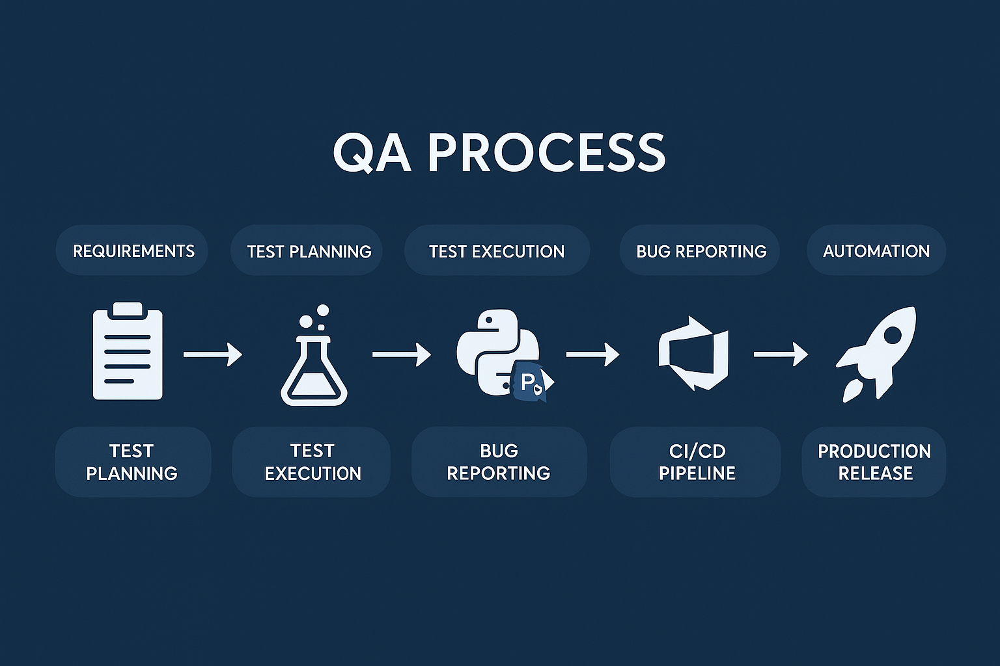

Welcome to My QA Portfolio
I’m Ravinder Singh, a Senior QA Engineer with over 4.5 years of experience testing web platforms, APIs, backend logic, and data pipelines. I specialize in Playwright (Python), SFTP transaction validations, Postman API testing, CI/CD integration with GitHub Actions and Vapor, and SQL backend verification using TablePlus.
📄 Download Resume